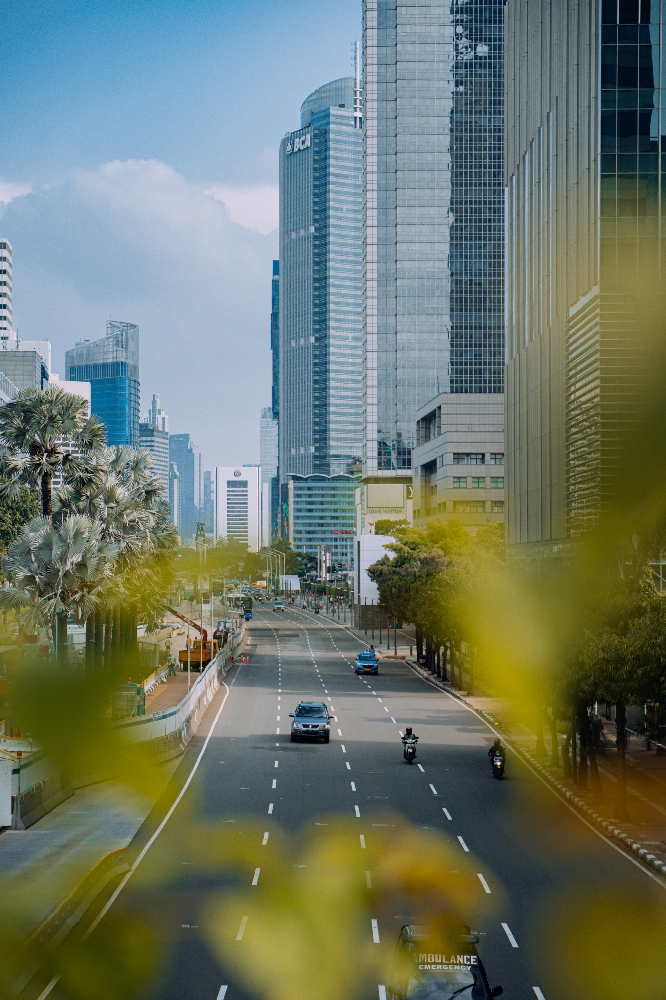

雅加達
醬油旅遊
Menu
海島漫步
城街走訪
編輯會員資料
登出

海島漫步
行程A主打清新放鬆的慢旅遊，行程會帶大家體驗印尼海島風情等雅加達近郊景點...
A
城街走訪
行程B主打雅加達市區，城市旅遊的逛街、夜生活，行程除了帶大家探索印尼大城市的繁華...
B
選擇您的行程
請填上您的姓名和行程並提交
姓名：
性別：
海洋漫步
城街走訪
上一頁
關於醬油
關於我們
最新資訊
馬上註冊
馬上登入
醬油特色
客製旅遊
半自由行旅遊
了解更多
其他意見
旅遊地圖
印尼地圖
印尼景點
印尼飲食
印尼交通
來雅加達
自然景觀
血拚放鬆
大飽口福
景點介紹